A breakdown per repository
The Architect splits stories into frontend, backend and test tasks for the right repository and keeps one OpenAPI contract for all of them.
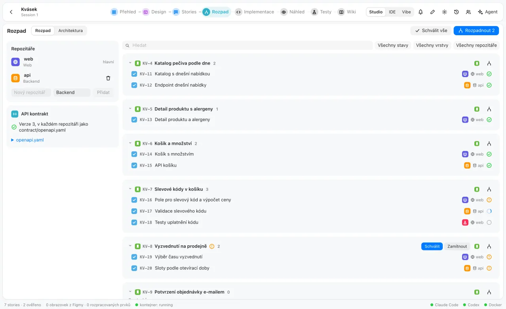
Stories, one Claude Code or Codex agent per repository, a live preview, tests that file their own bugs and a wiki for people. Self-hosted, on your own subscriptions.
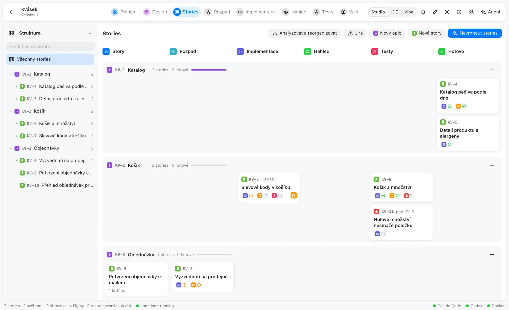
Epic, story, task and bug with keys like KV-7. Every step has one colour and one icon, on the cards, the tasks and the agents, so you always see where work stands.
The Architect splits stories into frontend, backend and test tasks for the right repository and keeps one OpenAPI contract for all of them.

Follow the agent step by step, open the changed files side by side, then accept or return the task with a comment.
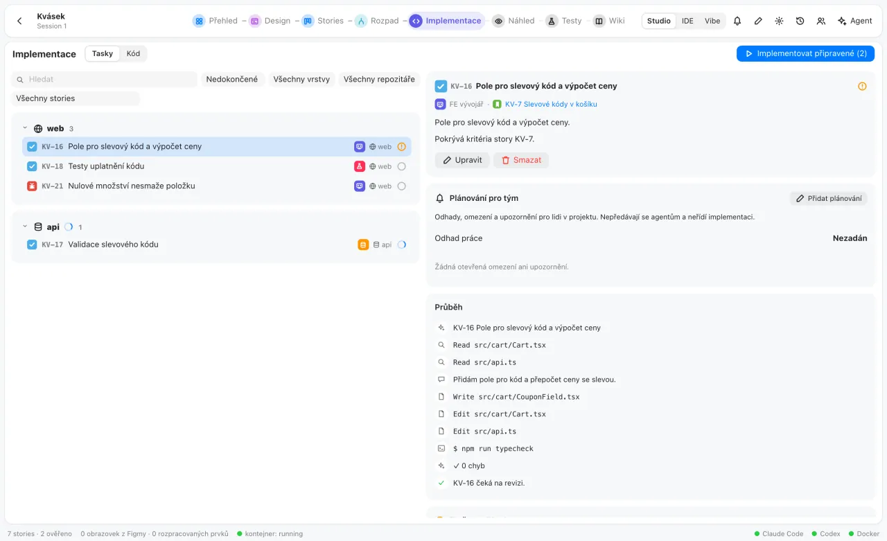
It runs in an isolated container. A note on any element is a bug for the right agent.
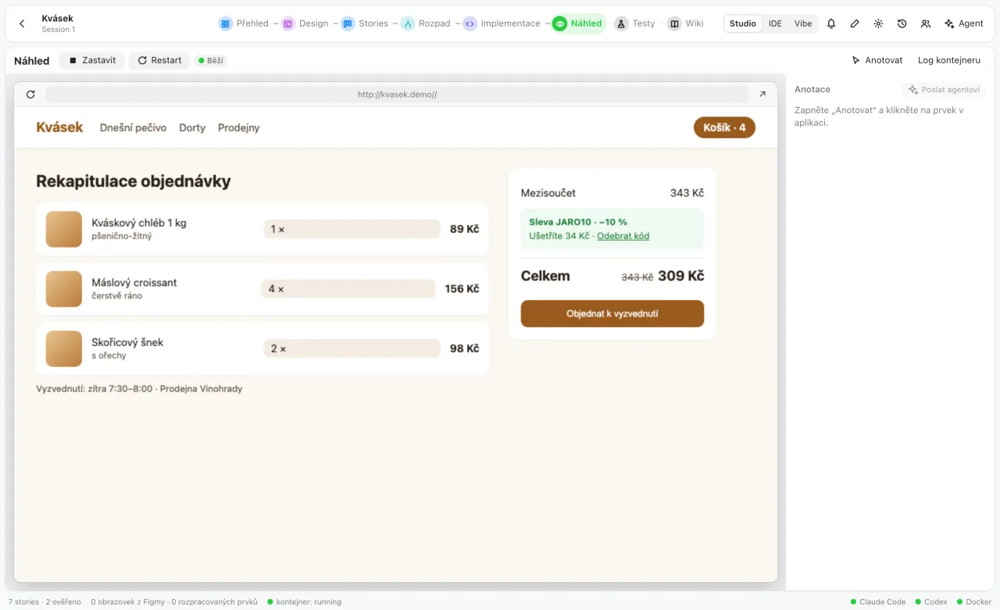
Playwright tests map to stories by key. A failing one opens a bug; passing again closes it.
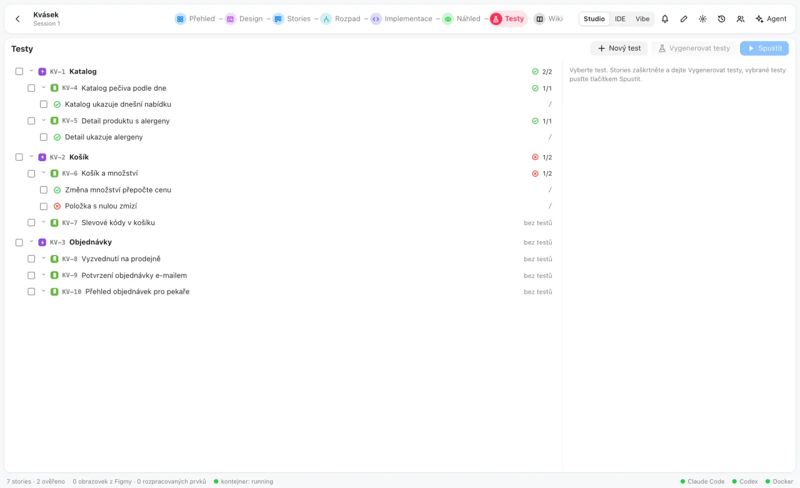
After green tests the Documenter writes what each feature does and how. You accept the change.
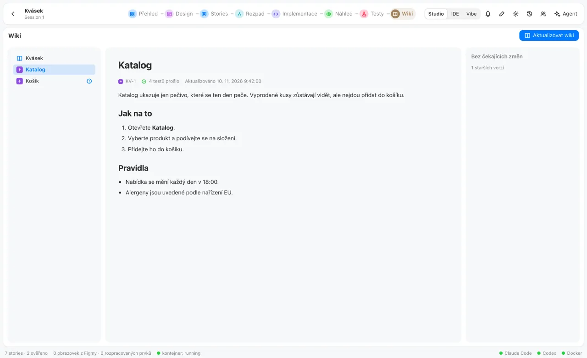
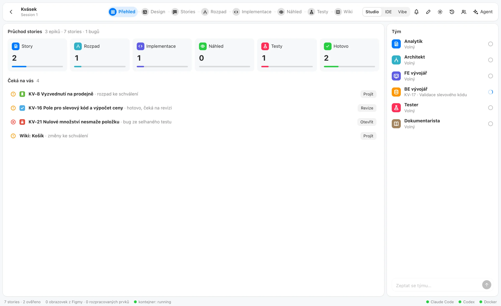
Frames become screens and layers become elements. Notes, linked stories and what is being worked on live beside them.
Analyst, Architect, FE and BE developers, Tester and Documenter, each with its role in the steps it owns.
Repositories for web, mobile, desktop, backend or a library, each built by its own agent against one contract.
New: the agentic IDE
One prompt becomes tasks for each repository's agent, running side by side in the grid. The agents' diffs show inline in the editor, and ⌘K sends a selection straight to its agent.
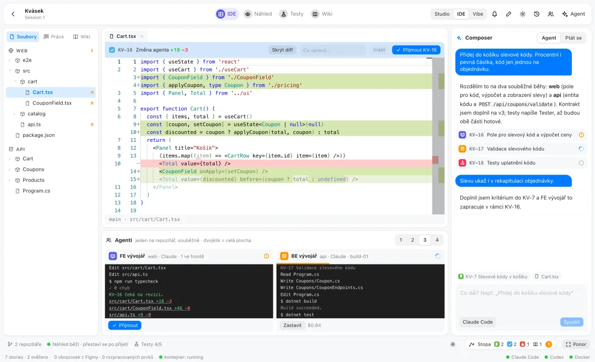
A new topic becomes a story, a follow-up adds criteria, a technical change stays a task. Nothing is guessed: unsure prompts wait unsorted, and every AUTO record can be reverted.
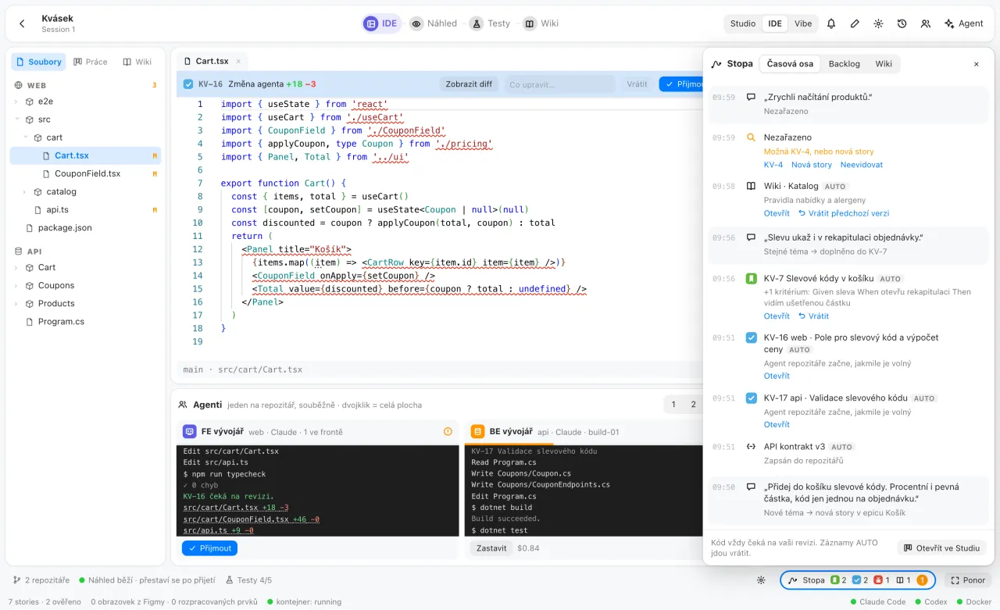
The Ponor shows only the running app and one prompt line. Click an element to talk about it; finished runs rebuild the preview, and the code still waits for review.
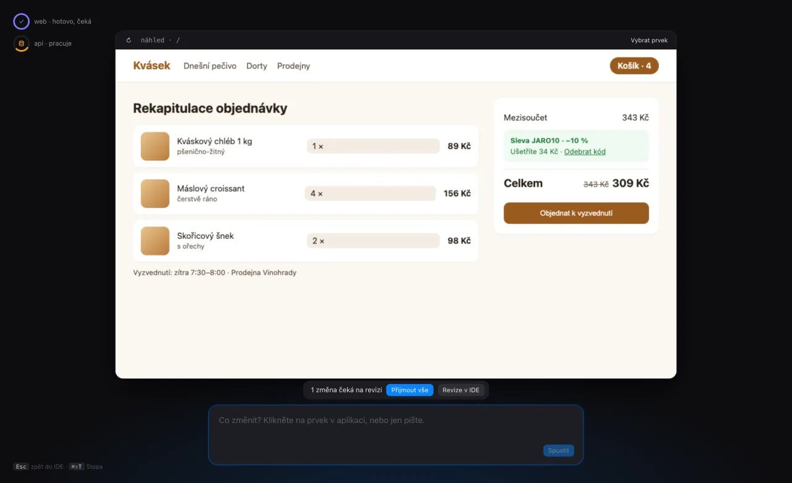
Workers run where Claude Code or Codex is signed in on a subscription. They connect out to a relay, so no server opens a port, and everything they exchange is end-to-end encrypted.
$ npx aforge-worker enroll <token> \
--name build-01 --labels build,review
$ npx aforge-worker runThe orchestrator plans a pipeline; the hub hands independent tasks to free workers by capability, label and load. Tokens and cost are reported, never estimated from prompt length.
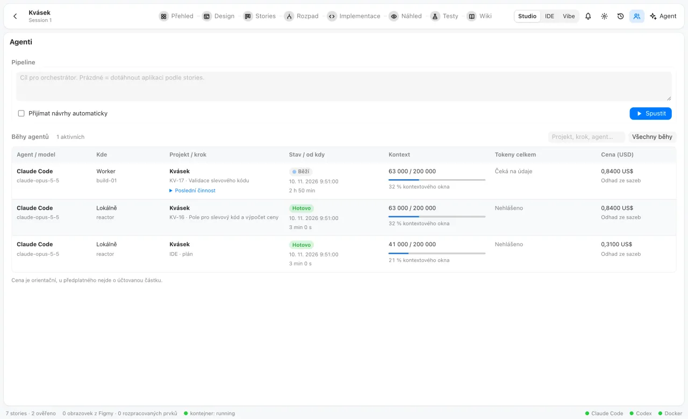
The consultant answers with proposals you accept or reject. Code from every run waits for your review.
Every change is a git commit; descriptions and wiki pages keep their versions; Scribe records can be reverted.
Previews, tests and production agents run in bounded containers with filtered networking, never with the host's environment.
Your server, your Keycloak, your subscriptions. Projects are plain JSON and git repositories on your disk.
Switch a session between the Studio, the IDE and vibe coding at any time; every story, task and prompt stays. In the clean Finder look, light or dark with the system.
Node.js 22, Docker and a signed-in Claude Code (or Codex). Free and open source under the GPL.
$ git clone https://github.com/DanielHromadka/aforge.git
$ cd aforge && npm install
$ npm run runtime:build # once: the preview image
$ AFORGE_AUTH=off npm run dev # http://localhost:5310